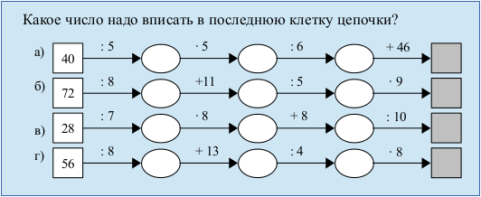

LibreOffice Writer. Создание схемы с помощью инструментов рисования
Пусть в документе, создаваемом во Writer, необходимо нарисовать такую схему (пример взят из «Математика, 5 класс» (Н.Я. Виленкин и др.)):

Создание схемы с помощью инструментов рисования
- С помощью инструмента «Прямоугольник» панели «Рисование» нарисовать квадрат (зажав клавишу Shift). На панели «Свойства рисунка» (обычно появляется в верхней части окна) установить цвет заливки и контура, толщину контура (0,03см). Вписать в квадрат число (двойной клик для активации режима ввода).
- Нарисовать линию, выровнять ее по центру правой стороны квадрата (для более точного позиционирования следует зажать клавишу Alt). Установить цвет, толщину и стрелку справа.
- Нарисовать эллипс, поменять для него цвет контура и заливки, выровнять у правого конца стрелки.
- Выделить стрелку и эллипс (Shift), скопировать и вставить три раза (не забываем снимать выделение перед вставкой), выровнять цепочку (лучше перемещать объекты с помощью стрелки на клавиатуре, а не мышью). У последней копии удалить эллипс, оставив одну стрелку.
- Скопировать квадрат, переместить его в конец цепочки, поменять заливку, удалить цифры.
- С помощью инструмента «Текст» («Текстовые») панели инструментов «Рисование» создать небольшую текстовую область и вписать туда «: 5». Скорректировать размер рамки и поместить ее над первой стрелкой.
- Продублировать несколько раз текстовую область и расставить копии над другими стрелками. Поменять текст (знак умножения в виде точки можно найти в «Специальных символах»).
- С помощью инструмента «Выделить» панели «Рисование» выделить все созданные элементы, сгруппировать их. Для этого необходимо в контекстном меню выбрать Группировка → Сгруппировать.
- Продублировать цепочку необходимое количество раз, копии переместить ниже.
- Изменить текст в текстовых областях и квадратах.
Создание списка изображений и смена маркера нумерации
- Привязку каждой цепочки сделать «Как символ» (в контекстном меню Привязка → Как символ).
- Расположить каждую цепочку на новой строке. Выделить все строки и нажать F12.
- Курсор установить внутри списка. Отрыть окно «Маркеры и нумерация» на вкладке «Настройки» выбрать нумерацию с русскими строчными буквами, установить знак «после» в виде скобки.